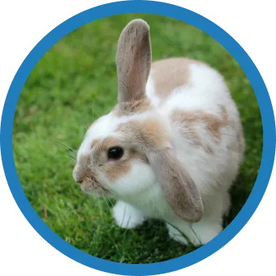

Mark Johnson
Pet adopted:Snowball rabbit
“Snowball has truly changed our lives. From the first day we brought him home, he’s filled our hearts with so much love. He’s not just a rabbit, he’s a playful companion who loves attention and affection. Watching him hop around and explore our home has been such a joy, and he’s always eager to interact with us, especially when we’re sitting on the couch or relaxing. Snowball has brought a new energy into our house.